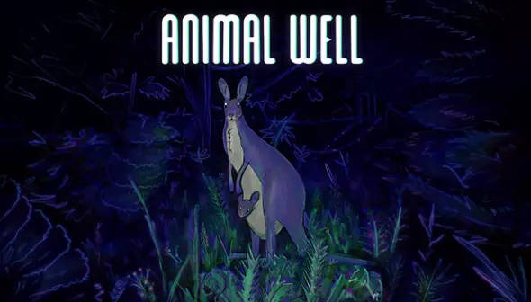

RP6 field report
Animal Well
🍇 Lost Track of Time
This feels like the definitive way for me to play Animal Well. The combination of flawless performance, beautiful visuals, and the RP6's form factor finally…
Reviewed July 2026

Test setup
RP6 compatibility
- Device
- Retroid Pocket 6
- OS
- Armada
- Store
- Steam
- Compatibility layer
- Proton
The play session
Experience
Animal Well feels like it was made for the Retroid Pocket 6. Performance is silky smooth, and the gorgeous pixel art absolutely pops on the tiny OLED screen. It’s one of those games where the display does as much for the experience as the game itself.
Controls feel natural and responsive, making exploration a joy. Everything just clicks, and the handheld form factor makes it incredibly easy to pick up for “just a few minutes”… which inevitably turns into much longer sessions.